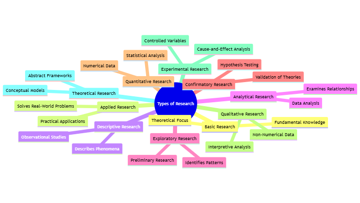
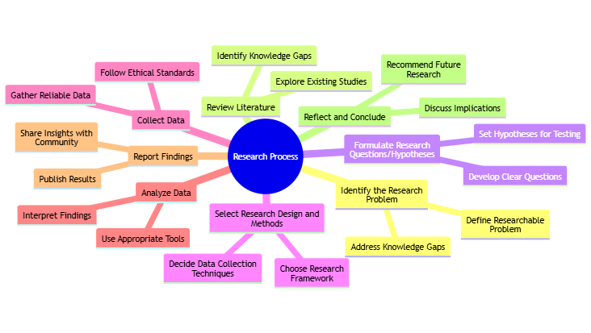
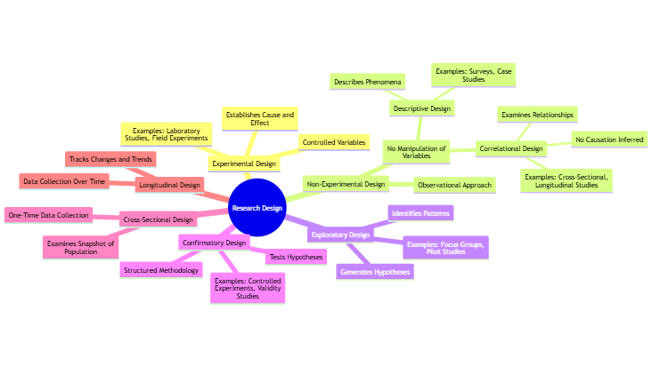

1 Fundamentals of Research
1.1 Introduction
This module introduces foundational concepts in research, including different types of research, the research process, framing research questions, research design, and reasoning approaches. By the end of this module, students will understand the essentials of conducting ethical and effective research, including the differentiation of methodologies and the appropriate contexts for each.
1.2 Types of Research
1.2.1 Approved Types of Research
In academia, research is categorized based on purpose, methods, and goals. Understanding these categories helps researchers select an appropriate methodology. A mind map of approved types of research is given below.

Basic (Fundamental) Research: Aims to expand general knowledge without immediate practical application. Often theoretical, basic research seeks to increase understanding of fundamental principles.
Example: A theoretical physics study on string theory aims to enhance understanding of the universe’s structure without immediate practical application.
Applied Research: Seeks to solve practical, real-world problems by applying existing knowledge.
Case Study: A research project aiming to optimize renewable energy sources (e.g., solar or wind) for urban settings, providing solutions to real-world energy challenges.
Descriptive Research: Focuses on describing phenomena as they exist without manipulating variables. Common in fields like psychology, sociology, and market research.
Example: A study analyzing consumer preferences in online shopping behavior, collecting data on demographics, shopping frequency, and preferences without altering the environment.
Analytical Research: Uses existing data to explore new relationships and insights, typically involving statistical analysis.
Case Study: An analysis of existing health data to identify patterns in the spread of a disease, like examining historical data from past flu outbreaks to predict future trends.
Exploratory Research: Conducted to gain insight into an area with limited existing knowledge. Often serves as a preliminary step to more structured research.
Example: Interviews with social media influencers to explore how they perceive their role in modern advertising could serve as the basis for more in-depth studies on social influence.
Confirmatory Research: Conducted to confirm hypotheses or theories by testing specific predictions, often using statistical tests to validate results.
Case Study: A psychology study tests whether a new therapeutic approach reduces anxiety levels in a specific demographic, using structured methods to confirm initial hypotheses.
Quantitative Research: Involves the collection and analysis of numerical data to find patterns, test hypotheses, or make predictions. It often uses structured tools like surveys or experiments.
Qualitative Research: Focuses on exploring ideas, understanding experiences, and interpreting non-numerical data, typically collected through interviews, observations, and open-ended surveys.
1.3 Research Process
A mind map of the steps invoved in a systematic research is given below.

1.3.1 Steps in the Research Process
The research process is systematic and includes multiple stages:
Identify the Research Problem: Define a clear, researchable problem based on gaps in current knowledge or specific needs.
Review Literature: Conduct a comprehensive review of existing literature to understand what is already known and identify gaps.
Formulate Research Questions/Hypotheses: Develop questions that the research will address, often leading to specific hypotheses in quantitative research.
Select Research Design and Methods: Choose the design (e.g., experimental, descriptive) and methods (e.g., surveys, experiments) that best fit the research goals.
Collect Data: Gather data according to the chosen methods, ensuring ethical standards and reliability in data collection.
Analyze Data: Use appropriate analysis tools to interpret data, drawing conclusions based on evidence.
Report Findings: Share results through publications, presentations, or reports, adhering to publication ethics.
Reflect and Conclude: Conclude with implications, limitations, and recommendations for future research.
1.4 Research Questions
1.4.1 Importance of Research Questions
Research questions provide direction, structure, and focus to a study. Good research questions are clear, concise, and researchable. They help narrow down the study’s scope and guide the choice of methodology.
Example: A study on the impact of remote work on productivity may have research questions like: - “How has remote work affected productivity in software development teams?” - “What factors contribute to productivity challenges in remote work setups?”
1.5 Research Design
A detailed mindmap of different types of research designs used in scientific research is given below.

1.5.1 Defining Research Design
Research design refers to the framework or strategy used to answer research questions. It includes decisions on data collection, analysis methods, and sampling.
Types of Research Design: - Experimental Design: Involves manipulation of variables to establish cause-and-effect relationships. - Non-Experimental Design: Includes observational studies without manipulating variables, like correlational or descriptive research.
Example: An experiment testing a new medication would assign participants to control and treatment groups to compare outcomes and establish causality.
1.6 Approaches to Research: Quantitative vs. Qualitative
1.6.1 Quantitative Approach
The quantitative approach involves collecting and analyzing numerical data. It’s ideal for studies needing measurable, objective results.
Example: A survey collecting data on student test scores to examine the correlation between study time and performance.
1.6.2 Qualitative Approach
The qualitative approach focuses on non-numerical data, emphasizing understanding experiences, behaviors, and cultural contexts.
Case Study: Interviews with teachers to explore their perceptions of online teaching’s challenges, analyzing responses for recurring themes and insights.
1.7 Building and Validating Theoretical Models
1.7.1 Importance of Theoretical Models
Theoretical models provide a framework for understanding phenomena and guiding research. Building and validating models ensure that the research’s assumptions are grounded in reality.
Example: A climate change model predicting temperature rises based on carbon emissions, validated by comparing predictions with observed data over time.
1.7.2 Steps in Model Building and Validation
- Develop a Model: Create a theoretical framework based on known principles and assumptions.
- Collect Data: Gather relevant data to test the model’s assumptions.
- Validate Model: Compare model predictions with real-world data, adjusting as needed to increase accuracy.
1.8 Exploratory vs. Confirmatory Research
1.8.1 Exploratory Research
Exploratory research seeks to understand phenomena in a new area, often preceding more structured research.
Example: Observational research on a new social trend, such as the rise of “digital nomad” lifestyles, to identify potential areas for in-depth study.
1.8.2 Confirmatory Research
Confirmatory research tests specific hypotheses or theories, using structured methodologies to validate or refute predictions.
Case Study: Testing a hypothesis on the relationship between exercise frequency and mental health improvements in a controlled study.
1.9 Experimental vs. Theoretical Research
1.9.1 Experimental Research
Experimental research involves controlled testing of hypotheses, manipulating variables to observe effects. It’s ideal for studies requiring cause-and-effect conclusions.
Example: A lab study examining the impact of a specific nutrient on plant growth by controlling conditions like sunlight and water levels.
1.9.2 Theoretical Research
Theoretical research is often abstract, focusing on concepts and frameworks without direct experimentation. It aims to build or refine models or theories.
Case Study: Research in theoretical physics, such as developing string theory, is primarily conceptual and aims to explain fundamental aspects of the universe without immediate experimentation.
1.10 Importance of Reasoning in Research
1.10.1 Types of Reasoning in Research
Deductive Reasoning: Begins with a theory or hypothesis and tests it through data collection and analysis. Common in confirmatory research.
Example: Hypothesizing that “increased exercise reduces stress,” then gathering data to confirm or refute this claim.
Inductive Reasoning: Begins with observations and patterns to develop a theory. Often used in exploratory research.
Example: Observing a trend in data suggesting that social media use increases in urban areas, then theorizing about its causes.
Abductive Reasoning: Combines both deductive and inductive approaches, focusing on forming plausible explanations based on incomplete information.
Case Study: A health researcher finds a link between dietary habits and disease rates, theorizing that lifestyle factors influence the correlation, though not all evidence is available.
1.10.2 Role of Reasoning in Validating Research Findings
Effective reasoning supports valid conclusions and ensures that findings are robust and generalizable. The choice of reasoning method should align with the research goals and design.
1.11 Summary
This module provided a foundation in research fundamentals, including understanding types of research, the research process, forming research questions, and distinguishing between quantitative and qualitative approaches. Additionally, it outlined the importance of reasoning and various research designs, guiding researchers in making ethical, well-informed decisions.
The next module will delve into more specific ethical considerations in research practices, emphasizing integrity, transparency, and accountability in the research process.